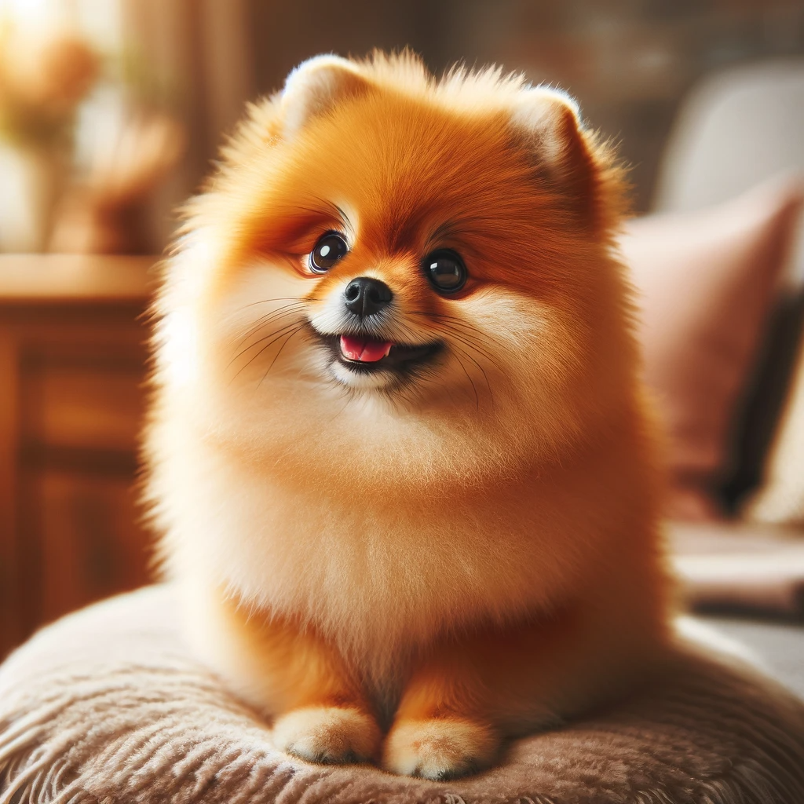
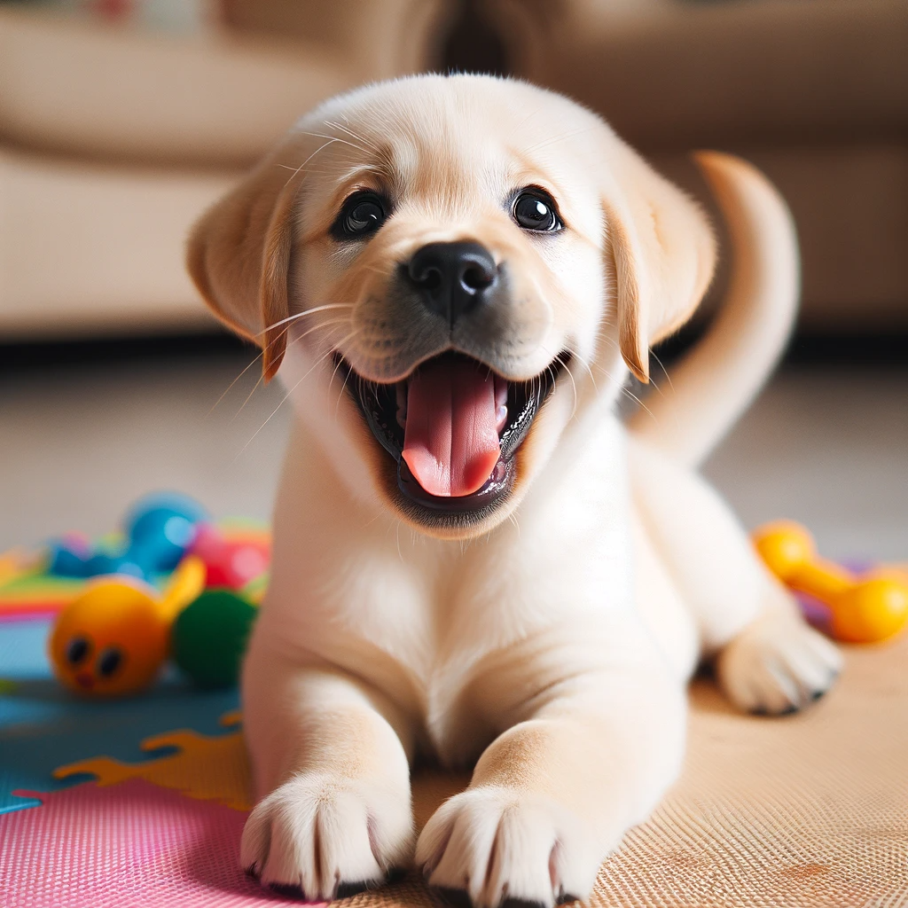
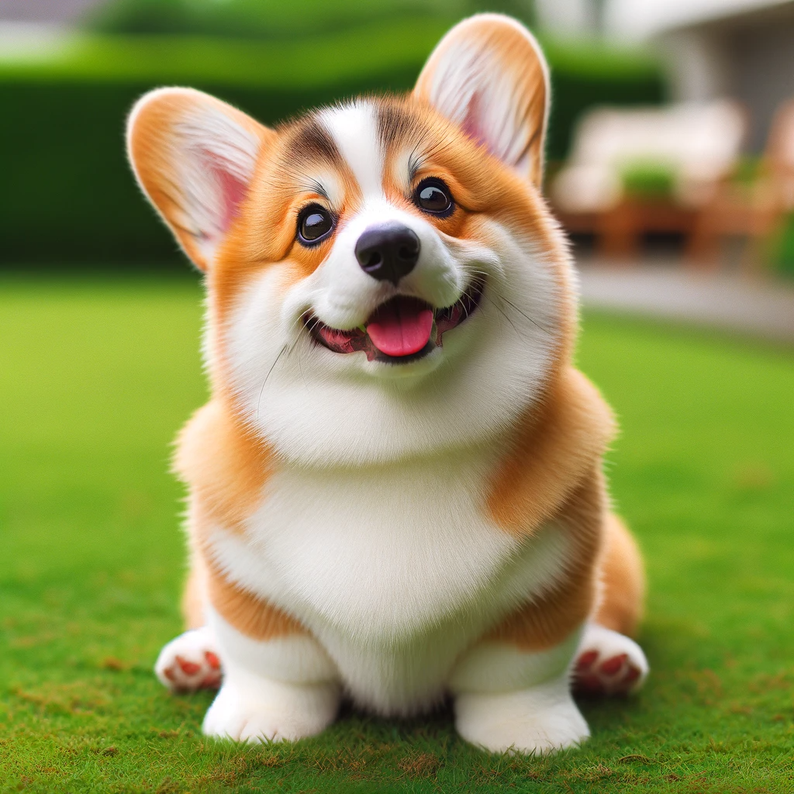
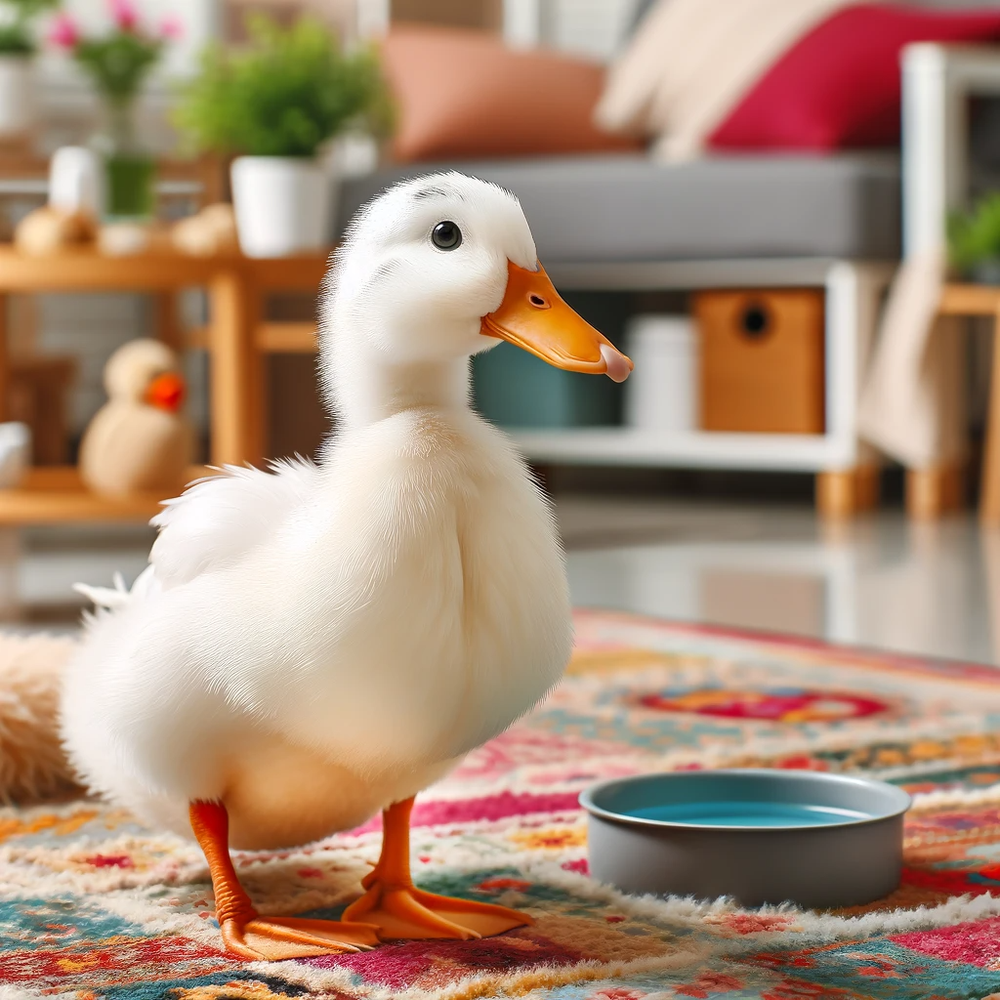
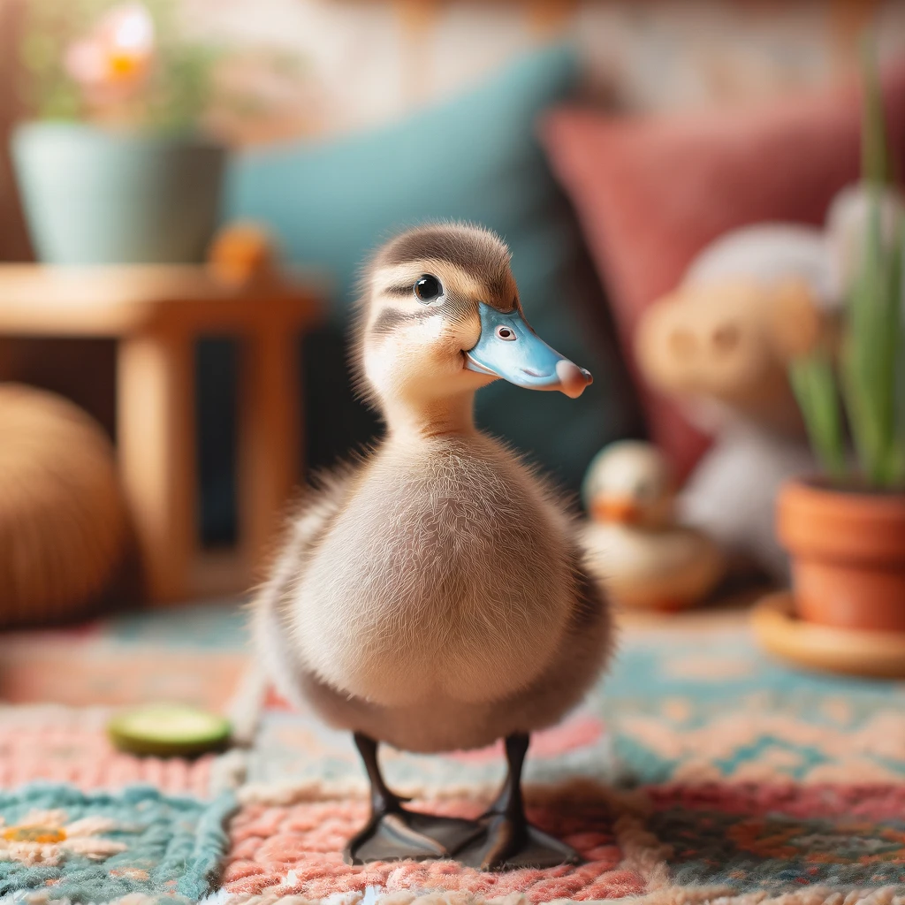
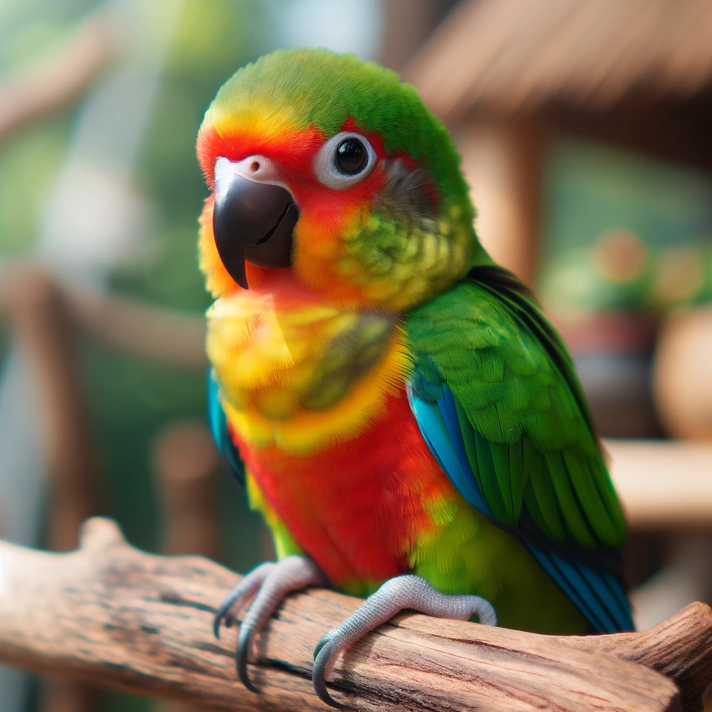
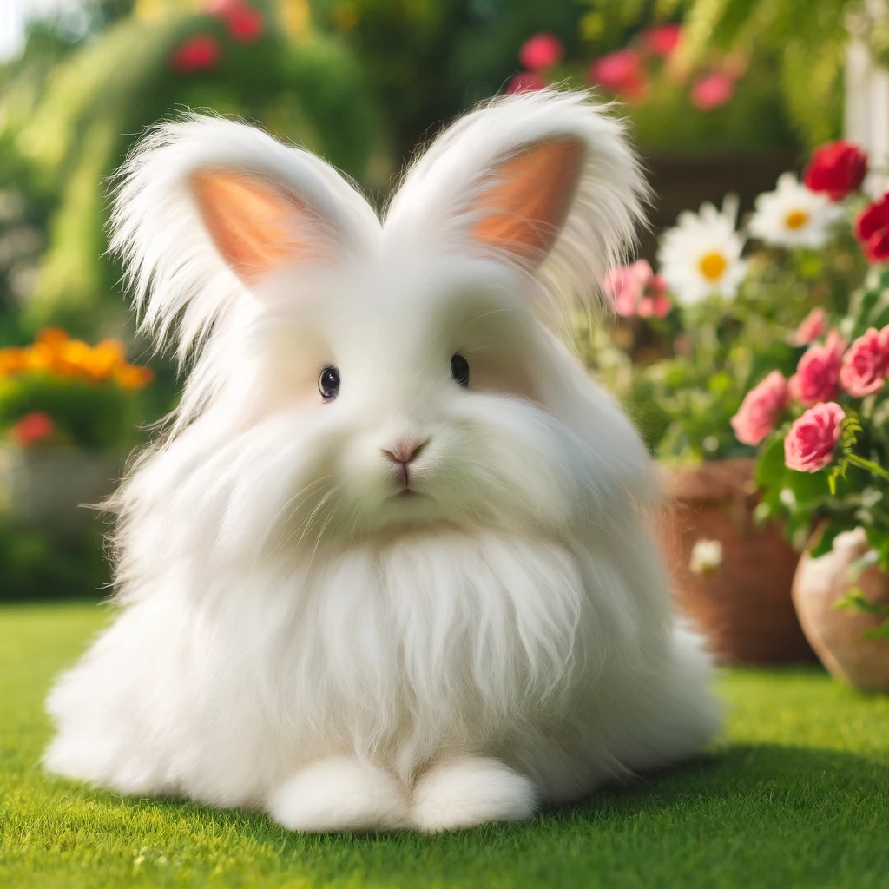
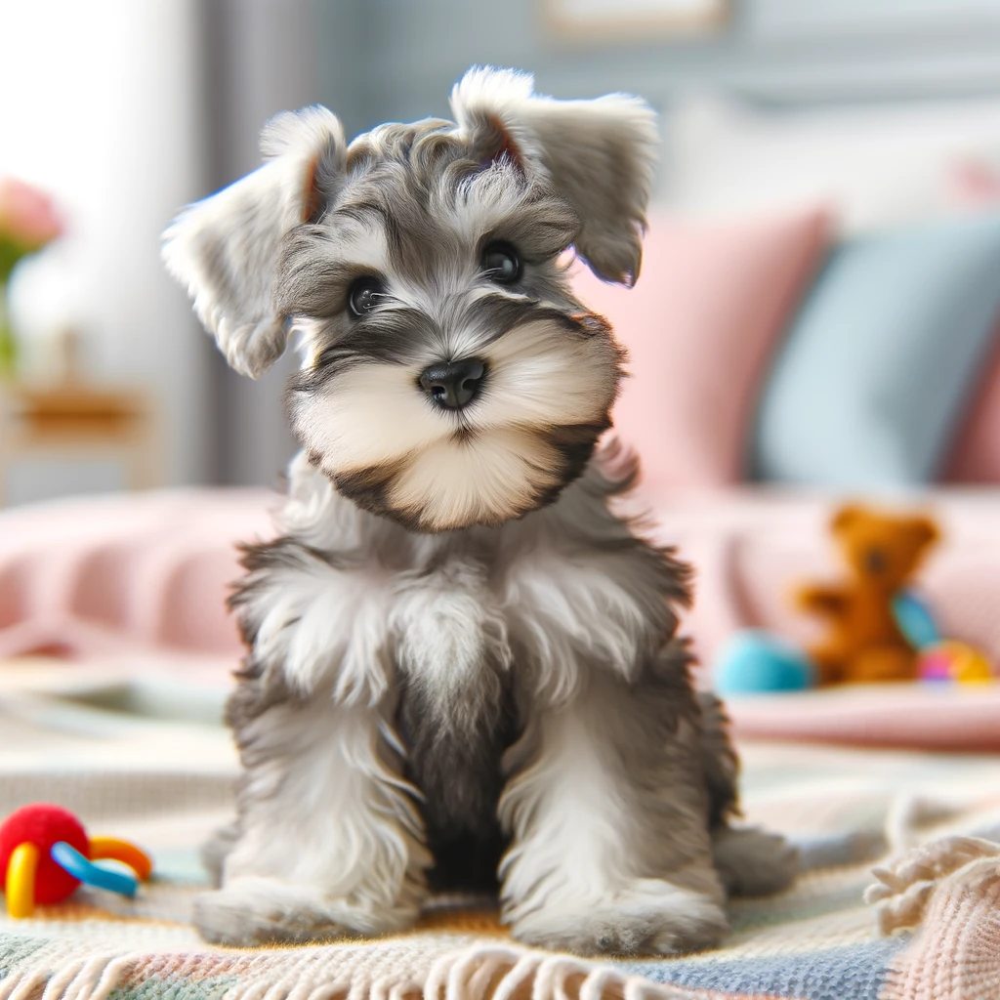

Pets
Welcome to our cozy corner of the internet! Meet your next flurry friend and discover unique stories behind each adorable face.

Teddy
Age:1 year
Breed:Pomeranian
Bio:Teddy is a bundle of joy with his fluffy, bright orange coat and big, sparkly eyes. He's always full of energy and loves to play. His curious nature and playful antics make him the star of any gathering. He enjoys cuddle time and is a great companion for cozy evenings at home.

Bailey
Age:4 months
Breed:Labrador Retriever
Bio:Bailey is the epitome of cuteness with her soft, creamy coat and big, brown eyes. As a young Labrador puppy, she embodies innocence and curiosity. Her gentle nature makes her a delightful companion, especially for families. Bailey loves to explore her surroundings, often tilting her head inquisitively at new sights and sounds.

Robbie
Age:1.5 years
Breed:Pembroke Welsh Corgi
Bio:Robbie is as charming as she is cute. With large, expressive ears, she's hard to resist. Robbie has a playful personality, always ready for a game or a cuddle. Despite her short legs, she's quite agile and enjoys brisk walks. Her adorable antics make her a wonderful pet for anyone looking for a cheerful companion.

Puddles
Age:2 years
Breed:Call Duck
Bio:Puddles is an adorable Call Duck who has fluffy white feathers. Her bright orange beak make her a delightful sight. Puddles is curious and content, often found waddling around or playfully interacting with her toys. Puddles brings a joyful presence to any home, perfect for those looking for a less conventional but incredibly charming companion.

Sunny
Age:1 year
Breed:Call Duck
Bio:Sunny is a charming little Call Duck with soft grey feathers and a light blue beak, making her a unique and adorable sight. She has a sweet and inquisitive nature, always ready to engage with her surroundings with soft, inviting eyes. Her gentle demeanor and cute appearance make her perfect for anyone looking to add a touch of warmth and curiosity to their home.

Rio
Age:1 year
Breed:Tropical Parrot
Bio:Rio is a vibrant and curious parrot with a love for interaction and play. His colorful plumage makes him a captivating sight. Always curious, Rio enjoys exploring his surroundings and is quick to greet anyone with a chirp. He's quite intelligent and can learn a few words or tricks. Rio thrives in an engaging environment where he can socialize and show off his playful nature.

Willow
Age:11 months
Breed:Angora Rabbit
Bio:Willow is a serene and fluffy Angora rabbit with a luxurious white coat that effortlessly captures attention. With her large, expressive eyes and long, soft ears, Willow embodies a peaceful presence. She is ideally suited for those who appreciate a gentle, calm companion that radiates a soothing atmosphere.

Charlie
Age:6 months
Breed:Miniature Schnauzer Puppy
Bio:Charlie is a joyful Miniature Schnauzer puppy with a fluffy salt-and-pepper coat that adds to his charm. Charlie's bright, expressive eyes and perked-up small ears show his alert and curious nature. Known for his intelligence and friendliness, Charlie is an ideal companion for families or anyone looking for a smart and affectionate pet.